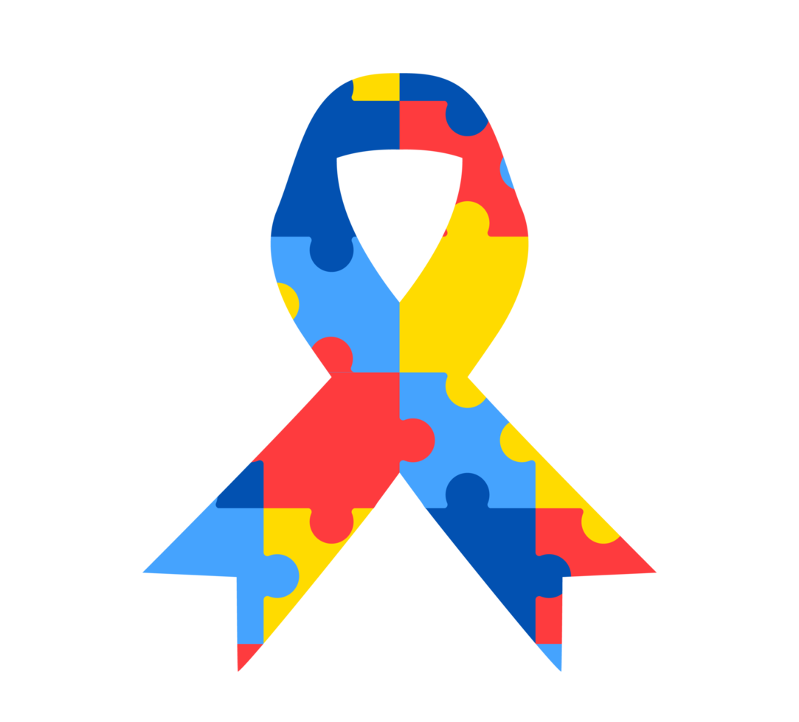

02 de abril: Dia Mundial da Conscientização do Autismo
O Dia Mundial da Conscientização do Autismo, 2 de abril, foi criado pela Organização das Nações Unidas (ONU), no ano de 2007.
Essa data foi escolhida com o objetivo de levar informação à população para reduzir a discriminação e o
preconceito contra os indivíduos que apresentam o Transtorno do Espectro Autista
Mas o que é autismo?

- Autismo, ou Transtorno do Espectro Autista (TEA), é uma condição neurológica que afeta o desenvolvimento
do cérebro e influencia a forma como uma pessoa percebe o mundo, interage socialmente e se comporta.
O autismo é caracterizado por padrões específicos de comportamento e dificuldades nas áreas de comunicação, interação social e comportamento.
Características
- Dificuldades na Comunicação: Pessoas com autismo podem ter dificuldade em desenvolver habilidades de linguagem verbal e não verbal.
Alguns podem ter atrasos na fala ou não falar em absoluto.
Eles também podem ter dificuldade em entender gestos, expressões faciais ou sarcasmo.
- Dificuldades na Interação Social: Indivíduos autistas podem ter dificuldade em estabelecer e manter relacionamentos interpessoais.
Eles podem ter dificuldade em entender as emoções dos outros, responder de maneira apropriada em situações sociais ou fazer amigos.
- Comportamentos Repetitivos e Interesses Restritos: Muitas pessoas com autismo têm comportamentos repetitivos, como balançar o corpo,
balançar as mãos ou fixar o olhar em objetos. Elas podem ficar excessivamente focadas em interesses específicos
e ter dificuldade em se envolver em atividades variadas.
- Sensibilidades Sensoriais: Indivíduos autistas podem ser hipersensíveis ou hipossensíveis a estímulos sensoriais como luz, som, toque ou textura.
Isso pode afetar sua capacidade de lidar com ambientes ocupados ou de participar de certas atividades.